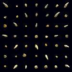

Music Reviews
-

Elvis Costello Hey Clockface
With his 31st studio album, Costello is doing whatever the hell he likes, trying out trying out glitchier, grimier sounds instead of the uptown pop style he grew up with.
Ethan Gordon reviews... -

The Mountain Goats Getting Into Knives
The Mountain Goats' 19th studio album is breezy and loose, with quirky yet endearing instrumentations and well-executed parody. Clearly, frontman John Darnielle and company are having a lot of fun.
Carlo Thomas reviews... -
.png)
Matt Berninger Serpentine Prison
Matt Berninger's solo debut is a mixed-bag that doesn't have many surprises but does offer a few solid tunes that fans will enjoy.
Joe Marvilli goes around the distant axis... -

Sinai Vessel Ground Aswim
On their second album, Sinai Vessel lead vocalist/songwriter Caleb Cortes makes a reflective soundtrack for when everything feels desolate and broken.
Ethan Gordon reviews... -
Pallbearer Forgotten Days
On their fourth LP, the Little Rock, Arkansas doom metal band deliver a life-affirming message as they throttle down their progressive ambitions and refine their sludgy dirges.
Juan Edgardo Rodríguez reviews... -

clipping. Visions of Bodies Being Burned
The LA hip-hop trio return to the tone of 1970s classic thriller films and 1990s horrorcore rap music of 2019’s There Existed an Addiction to Blood, performed with their classic graveness which only supports how scary this album can be.
Ethan Gordon reviews... -

Bruce Springsteen Letter To You
From his book to his Broadway show, Springsteen has been trafficking in nostalgia a lot recently. Looking back is the central theme of his very good twentieth studio album.
Ethan Gordon reviews... -

Adrianne Lenker songs / instrumentals
The prolific Big Thief singer-songwriter sacrifices no quality with an ever-abundant wellspring of ideas on her latest solo album. [Believe the Hype]
Mark Moody reviews... -

Mary Lattimore Silver Ladders
Silver Ladders errs on the side of what the L.A. artist does best, giving us forty minutes of ambient, refreshing, harp-based soundscapes.
Ethan Gordon reviews... -

Beabadoobee Fake It Flowers
The Filipino-born British singer-songwriter's debut studio LP is an edgy, brash, and well put together statement that goes back to the sleek pop sensibilities of 90s alternative music.
Juan Edgardo Rodríguez reviews...